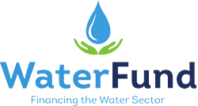

MajiData was launched as the pro-poor database of the Kenyan water sector covering all urban low income
areas in Kenya. A comprehensive data collection exercise started in 2009 and ended in 2011. More than 1800 urban low
income areas in 212 cities and towns of Kenya were mapped and the data captured. In 2016, the database was updated.
Developed initially by WASREB and WSTF with the support of GIZ through Water Sector Reform Programme, the database
has now grown with the vision of being the repository for georeferenced water services data.
This new version of Majidata offers not only the pro-poor information and sanitation infrastructure, but also Water
Service Providers' service area maps, networks and small scale service providers within the counties.

The Water Sector Trust Fund (WaterFund) is a Kenyan State Corporation under the Ministry of Water &
Sanitation and Irrigation and established under the Water Act, 2016, with the mandate to provide conditional and
unconditional grants to the Counties and to assist in financing the development of and management of water and
sanitation services in the marginalised and underserved areas.
It previously existed as the Water Services Trust Fund prior to the repeal of the Water Act, 2002, which had
established it.